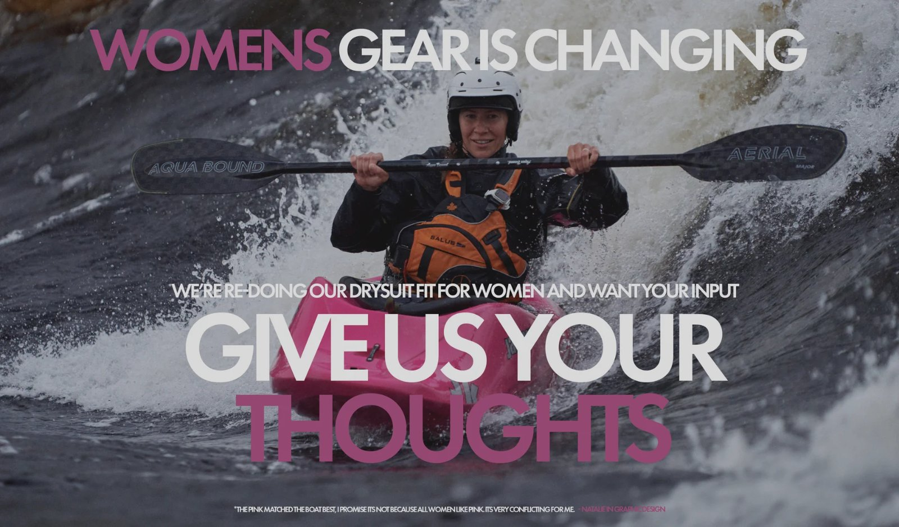
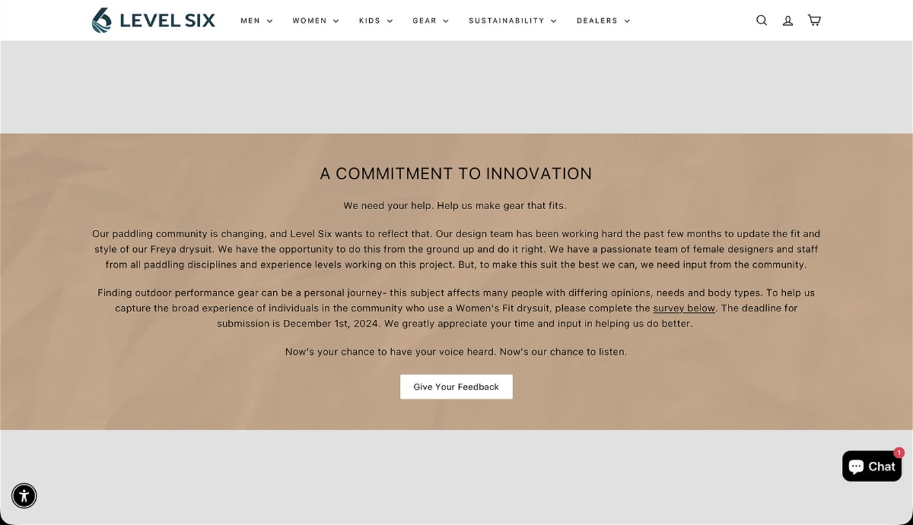
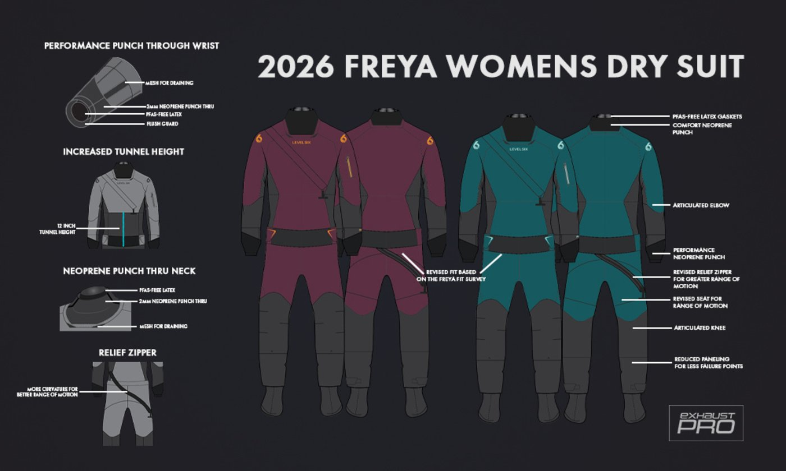
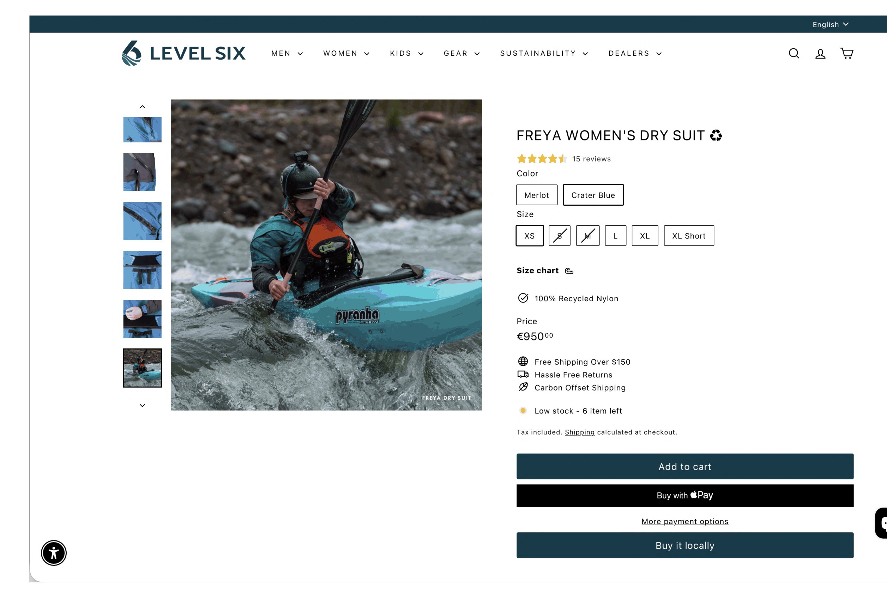
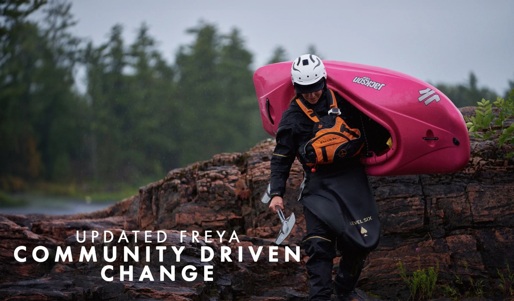

Technical equipment likes to present itself as neutral. A drysuit is a problem-solving object, its waterproof fabrics, sealed necks, taped seams, zips, reinforced panels and rationale all seem entirely practical before it feels cultural. But each of those decisions are made imagining a body before a user ever puts it on. It assumes where that body bends, how it sits, how it layers, how it enters and exits the suit, how it handles hours without bathroom access, how much discomfort it is expected to absorb quietly.
In November 2024 Level Six launched the Freya Drysuit Design Feedback Survey, collecting measurements, fit problems, and personal stories from women’s-fit and non-unisex drysuit users (Level Six, 2024b). That data helped craft the 2026 Freya, which was presented as a women’s drysuit designed “from the ground up” for female paddlers, pulled from 480 submissions (Marquardt, 2025). This is an answer to years of women’s outdoor gear being stuck in the logic of “shrink it and pink it” (Marquardt, 2025). This essay uses the Freya as a small case study of a larger question: what happens when women’s technical gear is treated as a realistic design problem, rather than an aesthetic variant? It’s not interesting because Level Six did something outstanding. It is interesting because the survey had to have existed at all.
The presumption of male universality is both a cause and effect of the gender data gap: male experience is general experience, and women are positioned as a minority or ‘niche’ point of view (Criado-Perez, 2019). The same argument applies to technical gear, but it doesn’t sell itself. The issue is seldom that someone is left out. Looks like size, lack of access, hip discomfort, a yanking torso, a zip that stops the bad move. A fit problem is a design assumption that has not generally been questioned, because the body it failed was never the body the creator envisioned (Reuther, 2025).
“Shrink it and pink it” names this failure bluntly. It’s usually used to criticise women’s products that are made by taking a male (or unisex) product, making it smaller, changing the colour, and calling it done. Aesthetics and design cues like proportion, shape, colour, surface, texture and weight can gender products and read them as masculine or feminine, not just use (Van Tilburg et al., 2015). Designed objects are also to be implicated in the construction of ideas about who those users are and what roles they occupy (Forty, 1986). Thus gender is an assumption made relevant in product design.
Many products allow for a fairly readable gender. And while it’s possible to sex a razor or a scent bottle by surface and still make it work, a drysuit can’t make that trade-off. In cold water paddling, Entwistle’s argument that dress is always a situated bodily practice becomes almost literal: seated posture pressing on hips and knees, layers underneath competing for space, boat entry demands specific ranges of motion, hours of exposure requiring bathroom access the garment must accommodate (Entwistle, 2015). The suit doesn’t fit the picture. It’s subject to the elements, to water and time and if it doesn’t hold up to any one of those, the activity changes. The materiality of clothing is a key part of its meaning and the person and garment become intertwined in ways that are often overlooked by research that focuses on representation (Woodward and Fisher, 2014). Artefacts have politics; that is, the social relations assumed by a designer become part of the object, and those relations are still in use whether they were ever consciously chosen or not (Winner, 1980). Drysuits constructed around a male body already determine which movement matters.

Level Six’s banner for their 2024 research does not present this product as being ready for the rigours of wipeouts. A paddler appears to be extended, smiling and enjoying in an environment that is dangerous to her, and entirely at home in the situation. The image is captured in an alternative way than most photographs of gear. The paddler already has a capable body; the brand now must continue to develop to keep up with her. What complicates the image is its own footnote, at the very bottom, the brand’s designer left a note inside the finished campaign: the pink in the typography matched the boat, she writes, and she finds this conflicting. The banner announces that women’s gear is changing carries, inside itself, the evidence that the assumptions being changed are still shaping the decisions being made.
The wording indeed matters. Level Six’s survey page says its paddling community is changing, that the brand wants to reflect that, and that the team has an opportunity to update the Freya “from the ground up”. It asks for input from the community because, as the page puts it, “we need input from the community” (Level Six, 2024a). The image therefore turns bodily experience into a public design prompt. It asks women paddlers to speak because the old product logic did not speak well enough for them.

This could be read generously as participatory design. It could also be read as a marketing move. Both are true enough. Banet-Weiser argues that brand culture should be interpreted through the lens of ambivalence, where both the economic need for profit and authenticity/intentions are expressed simultaneously rather than through distinct moral paradigms (Banet-Weiser, 2012). The Freya survey depends on that ambivalence. The call for feedback feels sincere because the problem is real. It also gives Level Six a powerful position: the brand becomes the one that listens.

The announcement page hero of 2026 Freya provide solid visual support for the departure of the campaign theme and transition into a constructional phase of manufacturing. The illustrations consist of forward- and rear-facing views of the suit and use arrows and text to indicate the increased height of tunnel, neoprene punched through neck area, relief zipper, increases in curve to increase range of motion, new fit from Freya Fit Survey, articulated elbows, articulated knees, reduced failure points and an updated zipper placement. This set of illustrations serves as a “physical” representation of the politics associated with the Freya 2026.
The Relief Zipper does not fall into the category of being a symbolic detail on the Freya 2026; instead, it alters the way an individual with a sealed suit will manage their body. Through the use of articulated knee and elbow styles, these items do not signify the presence of femininity; these items are simply utilitarian based on methods of movement. The reduced amount of panelling should not signify visual restraint, rather, it represents a method to reduce the risk of garment failure; the failure of a garment may cause cold water to enter into the suit (Level Six, 2026b). Therefore, all of this represents functional performance; none of these items were based on appearance; and these examples provide a means for identifying specific physical features that had been incorrectly constructed and/or represented by the earlier drysuit pattern.
Designed objects embody social arrangements without declaring them as ideology (Winner, 1980). The old drysuit pattern did not announce that it was built around a male body. It simply had seams and panels, and missing accommodations, and women wore the consequences. What the Freya diagram makes visible is that the correction is also a documentation, each revised feature is a named site where the previous assumption failed. Knowledge is always produced from a specific position, never from nowhere (Haraway, 1991). The “universal” drysuit pattern was universal only for the body that designed it. The survey made that visible by collecting the bodies it had excluded.
The technical specs of the 2026 Freya – recycled fabric that is PFAS free, waterproof and breathable – keep it inside the language of serious outdoor gear (The Paddle Sports Show, 2025). The diagram is not just to be viewed as a representation of the paddler; rather, it is making a performance claim and using the technical language of the outdoor community in order to differentiate serious versus casual users. Bourdieu points out that taste creates the classifier; therefore, knowledge of what is of value, creates the feeling of belonging, as much as the actual product does (Bourdieu, 2010). The distinction between a double tunnel height and articulated knee is functional, but it is also indicative of a paddler as someone the culture takes seriously. A product that assumes women need a revised relief zipper placement positions them as technical users with legitimate demands on the gear. The new Freya’s announcement diagram is, among other things, an argument about who counts as a serious paddler in ways that are illustrated, instead of articulated, through the number of annotations within the diagram.

The Freya product page cannot exist solely within a correction framework. Rather, it reverts back to a page where you have all the elements of a retail experience such as price, size selector, stock warning, and a buy button. Yet it is presented in a style that invokes confidence, fit and community.
The commercial nature of the Freya’s design is not coincidental. The technical aspects that make a drysuit useful and desirable are included in its saleability. The informed female paddler, the serious outdoor user, the person whose body was finally measured correctly – these are identities the product now offers for purchase.
The community-driven banner makes the conversion explicit: a paddler crosses wet rock carrying a bright pink kayak, and the redesign acquires an emotional shape. Listening. Correction. Belonging. Progress. The image on the product page does not represent a quantitative value; the image represents a story and alluded to in the redesign and is part of what Level Six sells.

The Freya represents the function of the Arvidsson mechanism throughout the entire branded experience. The women’s size measurements provide the information for the design, the design provides the basis for product development, and product development provides the basis for the branded story, which then becomes checkout (Arvidsson, 2006). This process does not require cynicism to function. Authenticity and economic value reinforce each other, and the Freya’s power as a campaign comes precisely from the fact that the problem was real (Banet-Weiser, 2012). Genuine dissatisfaction produces an authentic and sincere product message, and that authentic and sincere message produces sales.
The woman excluded by poor technical fit is not discarded like a garment. The exclusion is subtler with she compromising and tolerating restriction, treats discomfort as personal inconvenience. The product persists while her participation erodes. Chapman’s argument regarding designed obsolescence applies at the level of experience rather than the level of physical material; function can be designed out of existence before a person ever wears the product, and women carry that failure of functionality in the form of a sense of disappointment at their own lack of fit (Chapman, 2015). The Freya challenges that paradigm by treating the female body as a technical interface. The survey, the diagram, and the new construction of the Freya are evidence of actual design consideration being given to women’s bodies. They also produce a new insider position. Whoever cares and understands the diagram is recognising a technical correction that casual consumers may not even know to ask for. It separates the paddler who has lived with the failure apart.
Level Six is a small company in the paddlesports industry; the Freya is a niche product serving a niche market with comparatively low financial reward; thus, the Freya should not be flattened into a cynical brand exercise (Marquardt, 2025). The critique is structural: once a company has a story, that story can be leveraged for commercial gain in whatever manner desired. Once care becomes visible, care becomes valuable. The Freya acknowledges a genuine design failure, but the evidence for the correction of that design failure has now been packaged with the Freya as evidence of sensitivity to women. Both aspects are true, and the fact that one aspect does not negate the other.
Consequently, the Freya has created a small ecosystem of recognition, wherein, insider will purchase from the brand that represents understanding of the problem, and the brand will demonstrate the user’s understanding back to them, to strengthen the brand’s authority. Outsider products remain easier, cheaper or more visible, but they often keep the older logic intact, treating gear for women as a variation, instead of an original. Therefore, the Freya is exposing a split in the marketplace between products that view women only as consumers and products that understand women are also technical participants. An understanding of why the tweaks is significant in the context of the user’s level of paddling competence. Taste is often more than luxury styling, but the caring and knowing of how function is supposed to feel.
What the drysuit finally reveals is the narrowness of the imagination that made the Freya necessary. A garment designed to keep the wearer warm while participating in outdoor activities in a harsh environment should not require a public survey to establish that women’s bodies deserve serious technical accommodation. The fact that this fit had to be measured, diagrammed and marketed is the real discovery of this case study. The Freya has never proved that Level Six solved a gendered gear, it shows the previous market condition more clearly: women were expected to participate in a technical culture without always being treated as technical users. The drysuit assumes a body before it is worn. The Freya makes that assumption visible, then turns visibility into a product, along with a community story and a reason for that vote of confidence.
Annotated bibliography
Key Reference 01
Criado-Perez, C. (2019) Invisible Women: Exposing Data Bias in a World Designed for Men. London: Chatto & Windus. London College of Communication Library, Main Collection, 305.420721 PER.
“The presumption that what is male is universal is a direct consequence of the gender data gap. […] because male data makes up the majority of what we know, what is male comes to be seen as universal. It leads to the positioning of women, half the global population, as a minority. With a niche identity and subjective point of view.”
This passage directly supports the essay’s starting claim: women’s technical fit is often treated as a niche correction because the male body has historically been treated as the default user. This prevents framing the Freya Drysuit case simply as a women’s product, instead, as a case that exposes a fact and design problem. The drysuit matters because it makes visible what was previously assumed and ignored, or left unmeasured.
Key Reference 02
Entwistle, J. (2015) The Fashioned Body: Fashion, Dress and Modern Social Theory. 2nd edn. Cambridge: Polity Press. Electronically through UAL Library via ProQuest Ebook Central.
“Dress in everyday life is always located spatially and temporally: when getting dressed one orientates oneself to the situation, acting in particular ways upon the body. However, one does not act upon the body as if it were an inert object but as the envelope of the self. Instead, our bodies are, in Merleau-Ponty’s words quoted above, ‘the visible form of our intentions’, indivisible from a sense of self.”
Entwistle’s words are useful because she frames dress as something that actually lived through the body. This supports my analysis of the Freya as technical clothing rather than styling. In a drysuit, fit is extremely situated: it affects movement, warmth, sealing, layering and access. Entwistle helps me argue that women’s fit is a functional and embodied design issue, instead of just a visual or symbolic one.
Key Reference 03
Banet-Weiser, S. (2012) Authentic TM: The politics and ambivalence in a brand culture. New York, NY: New York University Press. Electronically through UAL Library via ProQuest Ebook Central.
“Rather than generalize all branding strategies as egregious effects of today’s market […] it is more productive to situate brand cultures in terms of their ambivalence, where both economic imperatives and ‘authenticity’ are expressed and experienced simultaneously.”
Banet-Weiser gives me a way to analyse Level Six without simply praising or dismissing it. The Freya Drysuit responds to a real design problem, but that response is also turned into a brand story of listening and community building. This source supports my argument that the product is both a functional correction and a commercial narrative, which is exactly the tension my essay is trying to examine.
Key Reference 04
Arvidsson, A. (2006) Brands: Meaning and Value in Media Culture. London: Routledge. Electronically through UAL Library via VLeBooks.
“Much of the value of brands derives from the free (in the sense of both unpaid and autonomous) productivity of consumers […] Brand management solves this problem by positioning the brand as a kind of virtual factory, by giving labour a place where its autonomous productivity more or less directly translates into feedback and information. […] Brands evolve with the activity of the social, but in programmed ways, so that the qualities that they represent stay compatible.”
Arvidsson helps me analyse the Freya survey as more than user-centred research. Women’s measurements, fit problems along with their very own stories also become information that strengthen the brand’s value. This source supports my critical balance: “community-driven change” may be sincere and practical, but it is still organised through a brand system that turns user experience into a polished, marketable quality.
Key Reference 05
Bourdieu, P. (2010) Distinction: A Social Critique of the Judgement of Taste. Translated by R. Nice. London: Taylor & Francis Group. Electronically through UAL Library via ProQuest Ebook Central.
“Taste classifies, and it classifies the classifier. Social subjects, classified by their classifications, distinguish themselves by the distinctions they make, between the beautiful and the ugly, the distinguished and the vulgar […]. The antithesis between quantity and quality, substance and form, corresponds to the opposition […] between the taste of necessity […] and the taste of liberty—or luxury—which shifts the emphasis to the manner […] and tends to use stylized forms to deny function.”
This famous idea is useful here as Bourdieu shows that taste is far more than just personal preference, it sorts people into social positions. This helps me analyse technical outdoor gear as a form of competence and belonging. A drysuit is functional, but knowing why its zips, panels, tunnel height and fabric matter is also a code. His contrast between “substance/function” and “stylized form” also supports my argument that the Freya case pushes women’s gear back toward function rather than appearance.
List of additional references
- Chapman, J. (2015) Emotionally durable design: objects, experiences and empathy. 2nd edn. London: Taylor and Francis Group.
- Forty, A. (1986) Objects of Desire: Design and Society 1750–1980. London: Thames and Hudson.
- Haraway, D.J. (1990) Simians, cyborgs, and women: the reinvention of nature. London: Taylor and Francis Group.
- Level Six (2024a) Freya Drysuit survey, Level Six Europe. Available at: https://levelsix.eu/pages/freya-drysuit-survey (Accessed: 11 May 2026).
- Level Six (2024b) Women’s drysuit survey, Free Online Form Builder & Form Creator. Available at: https://form.jotform.com/243015129296152 (Accessed: 11 May 2026).
- Level Six (2026b) B2B: 2026 dry suits, Level Six Europe. Available at: https://levelsix.eu/pages/b2b-2026-dry-suits (Accessed: 14 May 2026).
- Level Six (no date a) Freya women’s dry suit ♻, Level Six Europe. Available at: https://levelsix.eu/collections/womens-drysuits/products/freya-womens-dry-suit (Accessed: 15 May 2026).
- Marquardt, M. (2025) Combating ‘shrink it and pink it’, Paddling Magazine. Available at: https://paddlingmag.com/stories/news-events/shrink-it-and-pink-it-level-six/ (Accessed: 11 May 2026).
- Reuther, K.K. (2025) Shrink it and pink it: Gender bias in product design, Harvard ALI Social Impact Review. Available at: https://www.sir.advancedleadership.harvard.edu/articles/shrink-it-and-pink-it-gender-bias-product-design (Accessed: 12 May 2026).
- The Paddle Sports Show (2025) Level six - 2026 Freya drysuit, The Paddle Sport Show. Available at: https://thepaddlesportshow.com/level-six-2026-freya-drysuit/ (Accessed: 18 May 2026).
- Van Tilburg, M., Lieven, T., Herrmann, A. and Townsend, C. (2015) ‘Beyond “Pink It and Shrink It”: Perceived Product Gender, Aesthetics, and Product Evaluation’, Psychology & Marketing, 32(4), pp. 422–437.
- Winner, L. (1980) ‘Do artifacts have politics?’, Daedalus, 109(1), pp. 121–136. Available at: https://www.jstor.org/stable/20024652 (Accessed: 16 May 2026).
- Woodward, S. and Fisher, T. (2014) ‘Fashioning through materials: Material culture, materiality and processes of materialization’, Critical Studies in Fashion & Beauty, 5(1), pp. 3–23. doi:10.1386/csfb.5.1.3_2.
Figures
- Level Six (2024c) WOMENS GEAR IS CHANGING. Available at: https://levelsix.eu/pages/freya-drysuit-survey (Accessed: 11 May 2026).
- Level Six (2026a) 2026 FREYA WOMENS DRY SUIT. Available at: https://levelsix.eu/pages/b2b-2026-dry-suits (Accessed: 12 May 2026).
- Level Six (no date b) UPDATED FREYA COMMUNITY DRIVEN CHANGE. Available at: https://levelsix.eu/pages/a-community-driven-fit (Accessed: 15 May 2026).